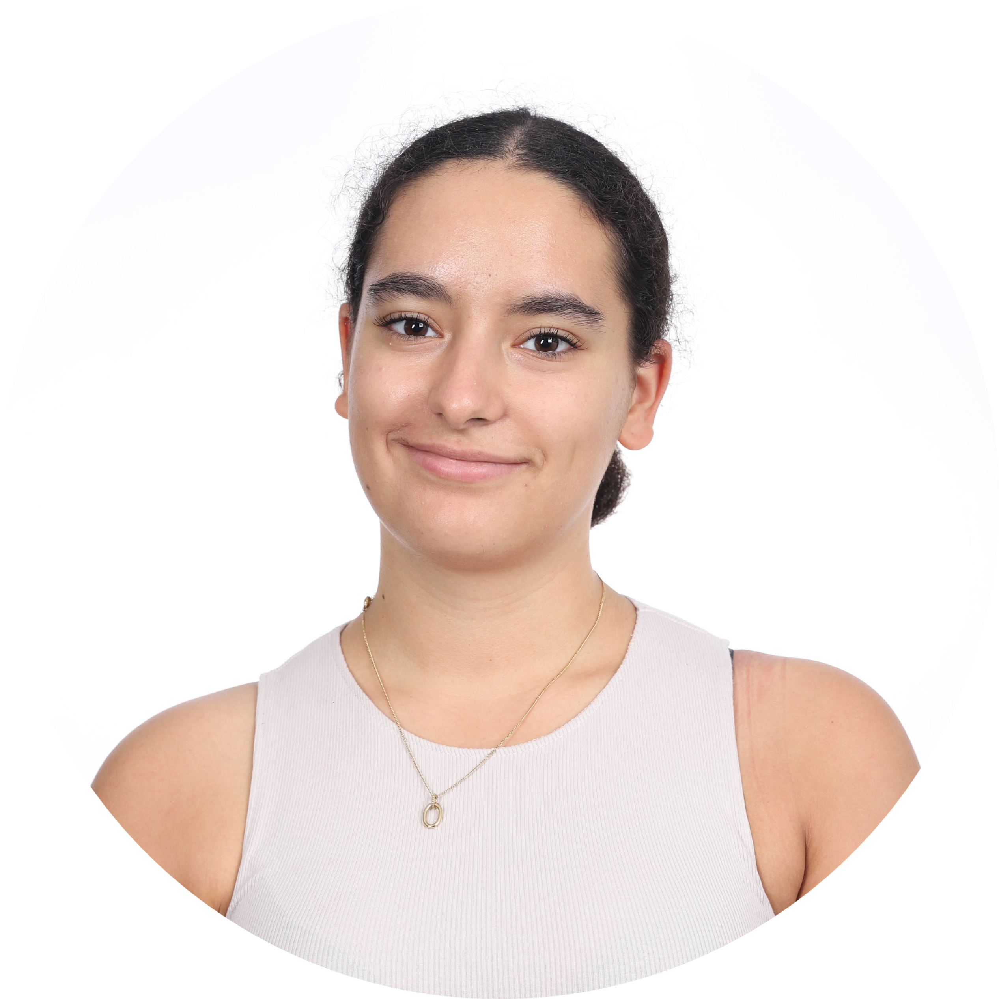
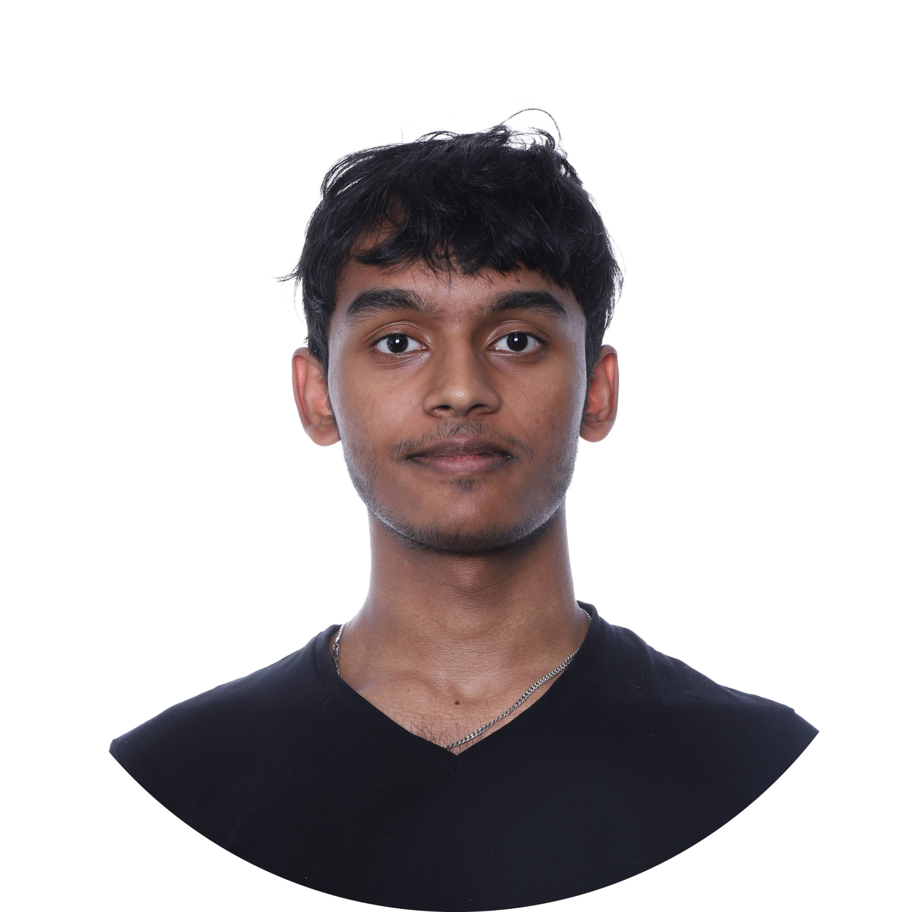
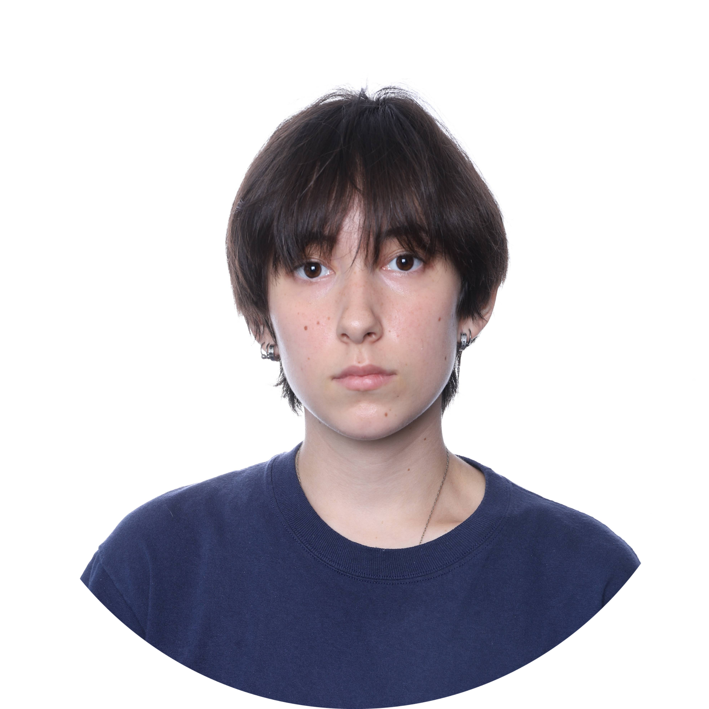

About our team
Welcome to our team's story!
We are a dynamic group of four individuals brought together by a common goal, to create an exceptional project.
We are a group of four passionate individuals brought together by a common goal: to carry out an OCR project as part of our semester project. Over the course of four months, we have combined our programming talents and skills to bring this ambitious project to life, using the C programming language and the SDL graphics library.
Our collaboration is built on the exchange of ideas, the complementarity of our expertise, and unwavering motivation to see this project through successfully. Each team member plays a key role in this technical and collective journey.
We have worked hard to overcome challenges and transform our knowledge into concrete solutions. This project is an opportunity for us to put into practice what we have learned, while exploring new technologies and strengthening our team spirit.
Together, we are moving toward a clear goal: to create an innovative and functional project that reflects our learning and dedication.

Oana

Andilath

Karthikeyan

Natsuki